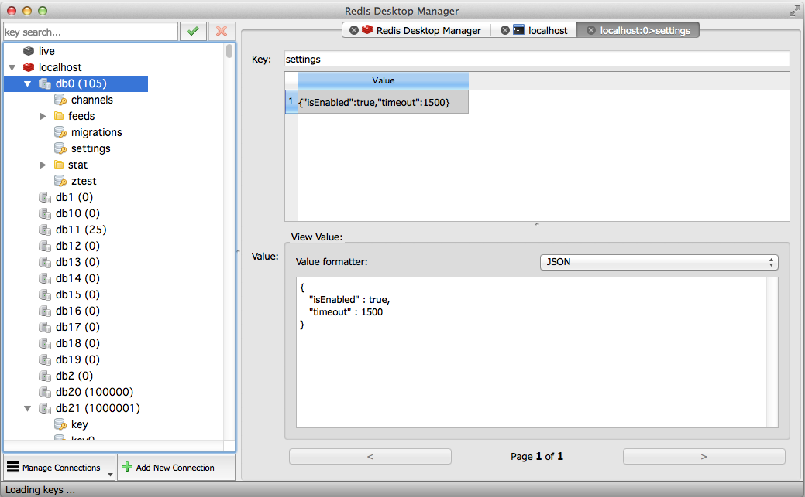
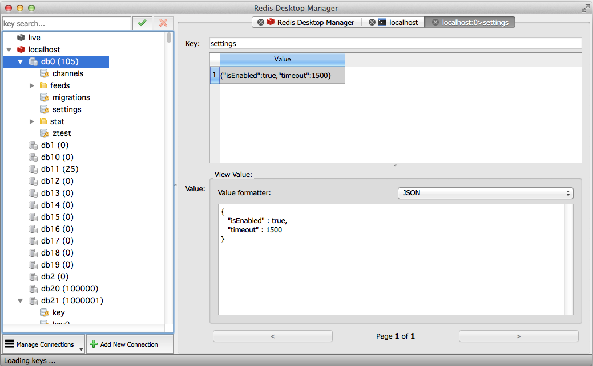

Redis入门
Redis命令
Redis高级应用
Redis GUI工具
Redis Desktop Manager（RedisDesktopManager，RDM）是一个快速、简单、支持跨平台的Redis桌面管理工具，基于Qt5开发，支持通过SSH Tunnel连接。

支持的平台
- Windows7+
- Mac OSX 10.10+
- Ubuntu14.04 & Ubuntu16.04
- Fedora
- CentOS
- OpenSUSE
Redis Desktop Manager（RedisDesktopManager，RDM）是一个快速、简单、支持跨平台的Redis桌面管理工具，基于Qt5开发，支持通过SSH Tunnel连接。
